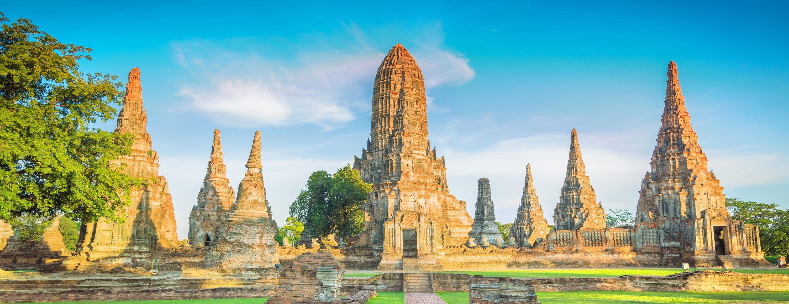
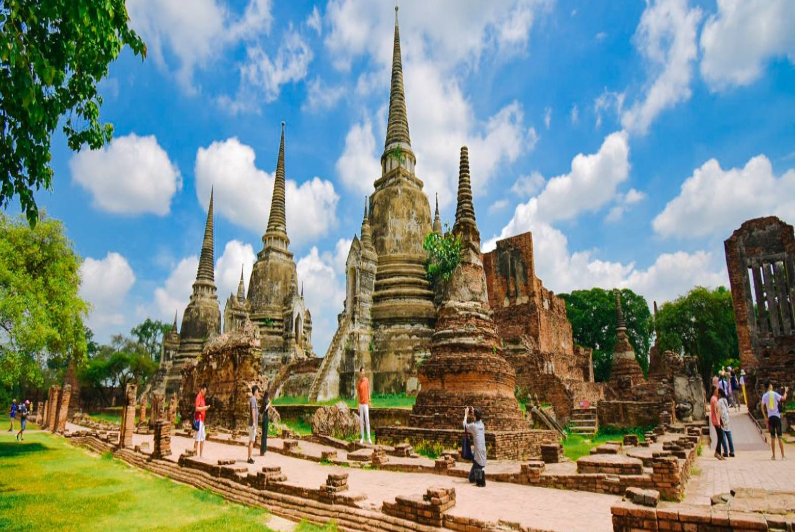
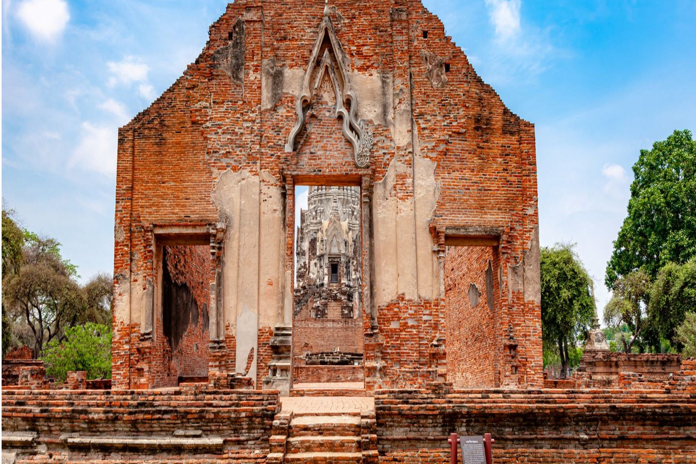
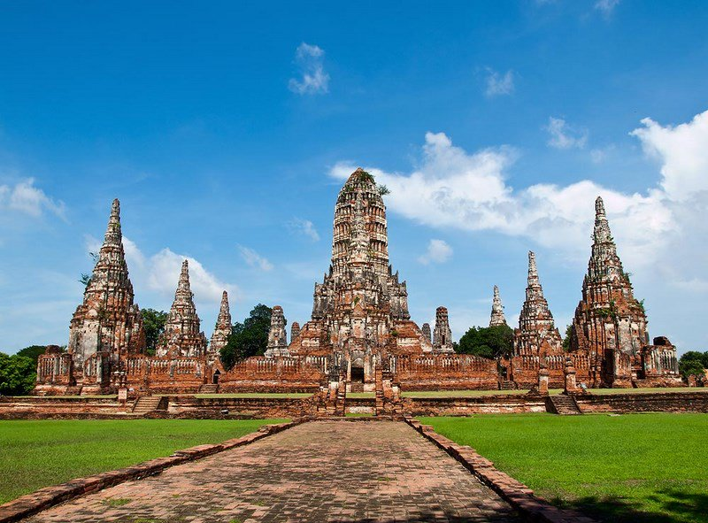
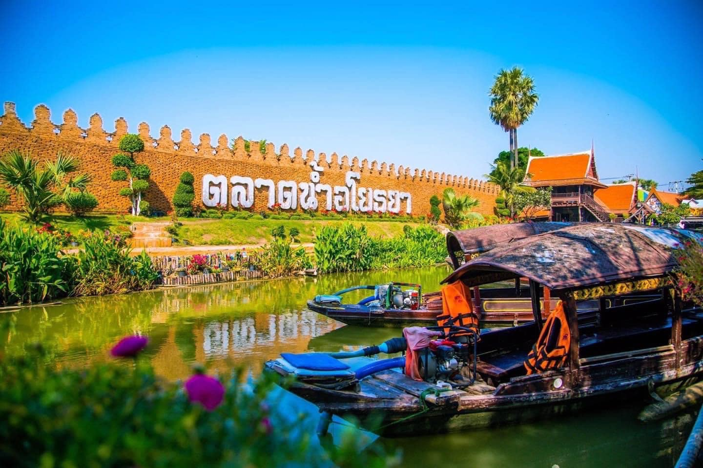
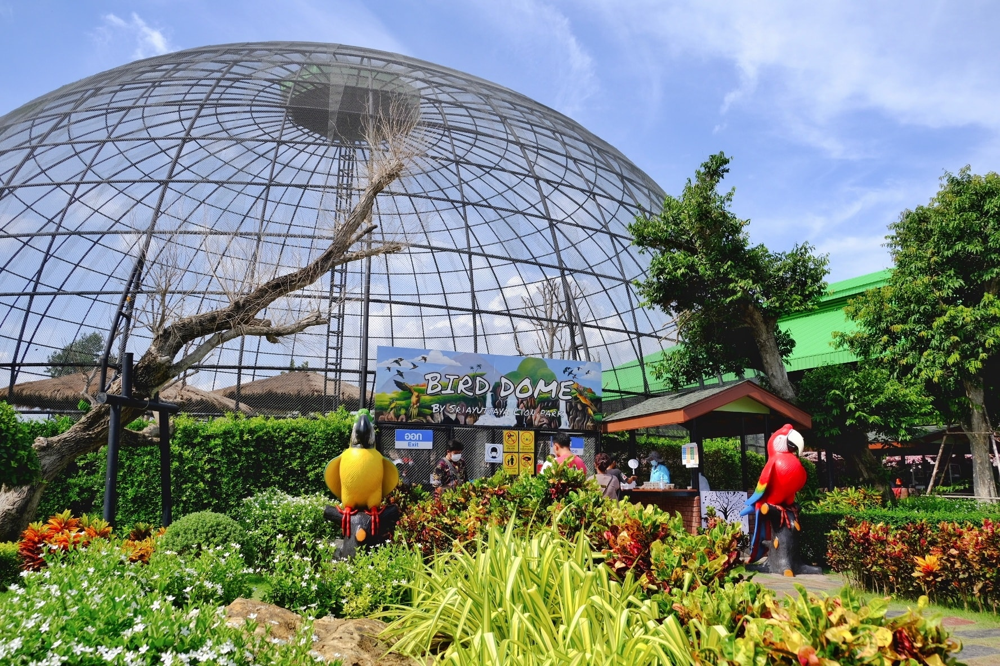

วัดมหาธาตุ
วัดพระธาตุเป็นสถานที่ศักดิ์สิทธิ์ที่มีความสำคัญต่อชุมชน...
วัดพระศรีสรรเพชร
น้ำตกใหญ่เป็นสถานที่ที่มีความสวยงามของธรรมชาติ...
วัดราชบูรณะ
อุทยานแห่งนี้มีพื้นที่อนุรักษ์ที่รวมถึงป่าไม้และสัตว์ป่า...
วัดไชยวัฒนาราม
หาดทรายขาวเป็นหาดที่มีชื่อเสียงเนื่องจากทรายที่ละเอียด...
ตลาดน้ำอโยธยา
เมืองเก่าเป็นพื้นที่ที่มีประวัติศาสตร์มายาวนาน...
ศรีอยุธยาไลออนพาร์ค
เมืองเก่าเป็นพื้นที่ที่มีประวัติศาสตร์มายาวนาน...